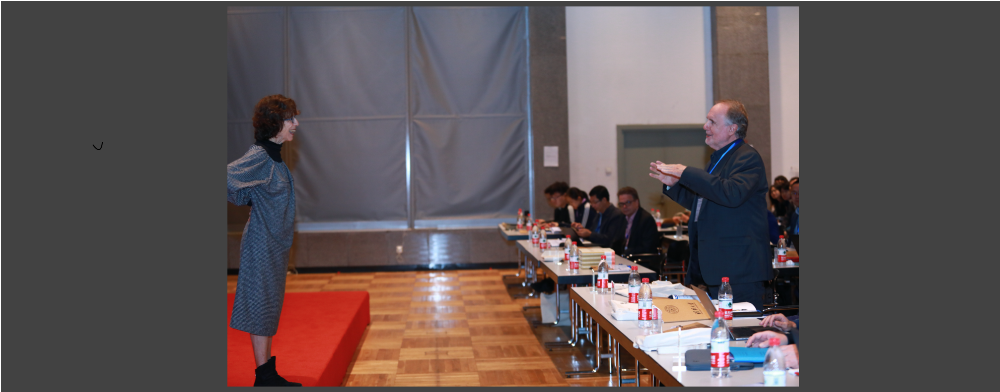
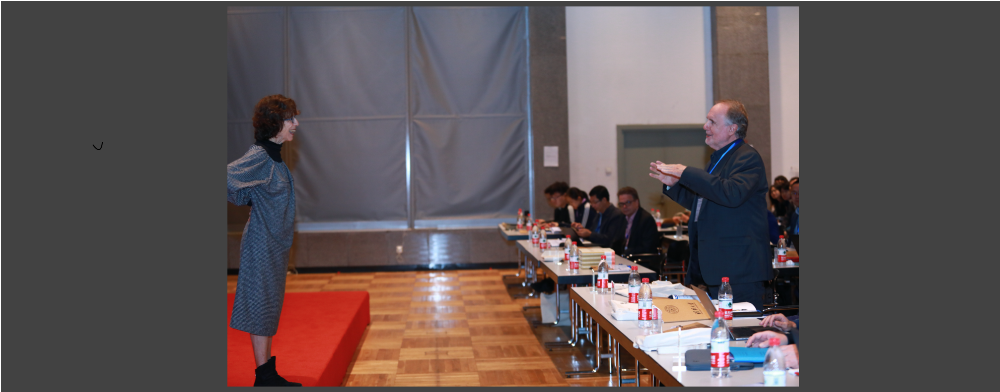
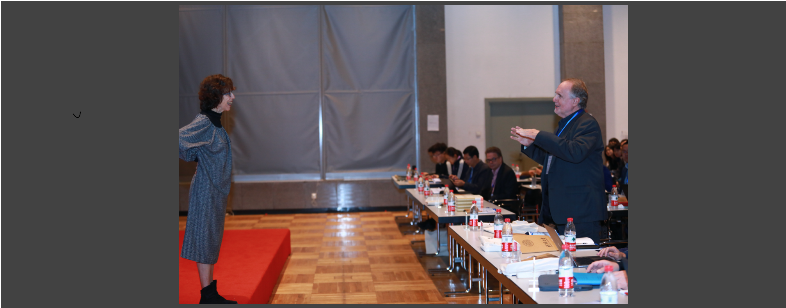
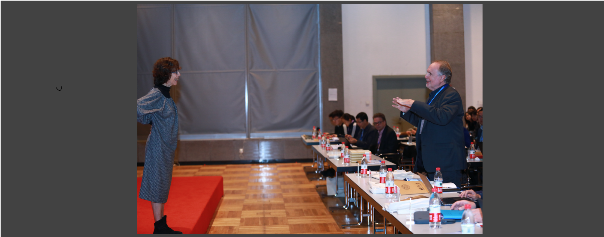

 

Traditional neural networks represent everything as a vector, and are able to approximate a subset of logical reasoning to a certain degree. As basic logic relations are better represented by topological relations between regions, we propose a novel neural network that represents everything as a ball and is able to learn topological configuration as an Euler diagram. So comes the name Euler Neural-Network (ENN). The central vector of a ball is a vector that can inherit representation power of traditional neural network. ENN distinguishes four spatial statuses between balls, namely, being disconnected, being partially overlapped, being part of, being inverse part of. Within each status, ideal values are defined for efficient reasoning. A novel back-propagation algorithm with six Rectified Spatial Units (ReSU) can optimize an Euler diagram representing logical premises, from which logical conclusion can be deduced. In contrast to traditional neural network, ENN can precisely represent all 24 different structures of Syllogism. Two large datasets are created: one extracted from WordNet-3.0 covers all types of Syllogism reasoning, the other extracted all family relations from DBpedia. Experiment results approve the superior power of ENN in logical representation and reasoning. Datasets and source code are available upon request.
A Triple in knowledge-graph takes a form that consists of head, relation, tail. Triple Classification is used to determine the truth value of an unknown Triple. This is a hard task for 1-to-N relations using the vector-based embedding approach. We propose a new region-based embedding approach using fine-grained type chains. A novel geometric process is presented to extend the vectors of pre-trained entities into n-balls (n-dimensional balls) under the condition that head balls shall contain their tail balls. Our algorithm achieves zero energy loss, therefore, serves as a case study of perfectly imposing tree structures into vector space. An unknown Triple (h, r, x) will be predicted as true, when x's n-ball is located in the r-subspace of h's n-ball, following the same construction of known tails of h. The experiments are based on large datasets derived from the benchmark datasets WN11, FB13, and WN18. Our results show that the performance of the new method is related to the length of the type chain and the quality of pre-trained entity-embeddings, and that performances of long chains with well-trained entity-embeddings outperform other methods in the literature.
We present a novel method to precisely impose tree-structured category information onto word-embeddings, resulting in ball embeddings in higher dimensional spaces ($\mathcal{N}$-balls for short). Inclusion relations among $\mathcal{N}$-balls implicitly encode subordinate relations among categories. The similarity measurement in terms of the cosine function is enriched by category information. Using a geometric construction method instead of back-propagation, we create large $\mathcal{N}$-ball embeddings that satisfy two conditions: (1) category trees are precisely imposed onto word embeddings at zero energy cost; (2) pre-trained word embeddings are well preserved. A new benchmark data set is created for validating the category of unknown words. Experiments show that $\mathcal{N}$-ball embeddings, carrying category information, significantly outperform word embeddings in the test of nearest neighborhoods, and demonstrate surprisingly good performance in validating categories of unknown words. Source codes and data-sets are free for public access \url{https://github.com/GnodIsNait/nball4tree.git} and \url{https://github.com/GnodIsNait/bp94nball.git}.
This paper addresses the problem of inferring the fine-grained type of an entity from a knowledge base. We convert this problem into the task of graph-based semi-supervised classification, and propose Hierarchical Multi Graph Convolutional Network (HMGCN), a novel Deep Learning architecture to tackle this problem. We construct three kinds of connectivity matrices to capture different kinds of semantic correlations between entities. A recursive regularization is proposed to model the subClassOf relations between types in given type hierarchy. Extensive experiments with two large-scale public datasets show that our proposed method significantly outperforms four state-of-the-art methods.
We revisit the kernel minimum enclosing ball problem and show that it can be solved using simple recurrent neural networks. Once solved, the interior of a ball can be characterized in terms of a function of a set of support vectors and local minima of this function can be thought of as prototypes of the data at hand. For Gaussian kernels, these minima can be naturally found via a mean shift procedure and thus via another recurrent neurocomputing process. Practical results demonstrate that prototypes found this way are descriptive, meaningful, and interpretable.